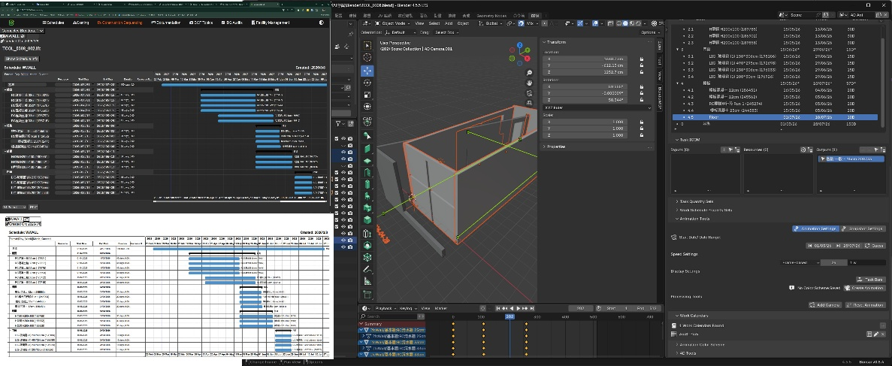
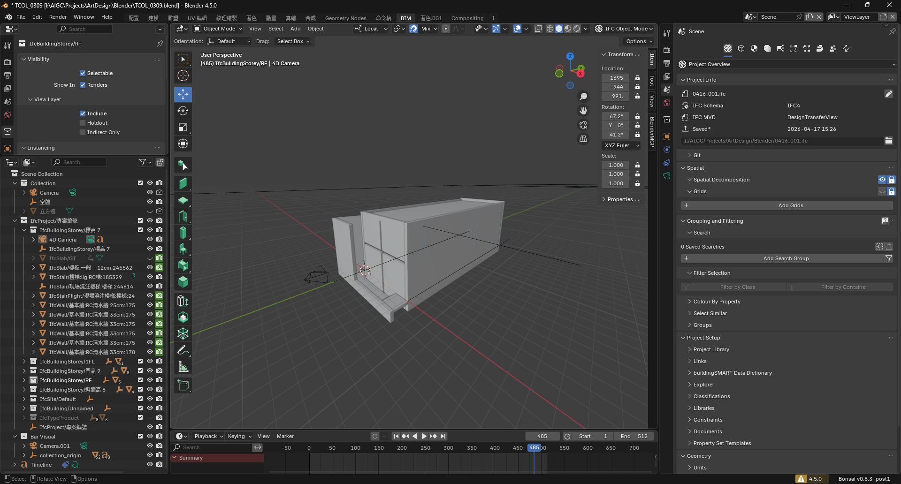
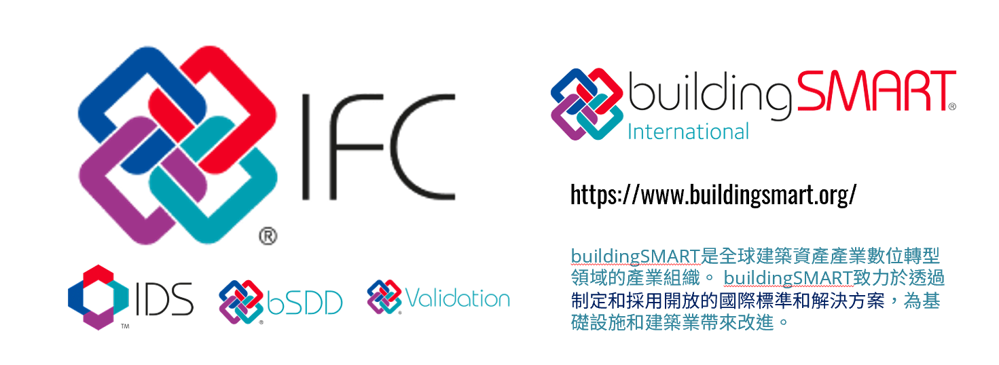
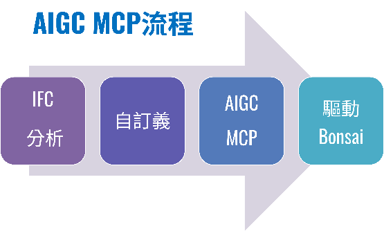
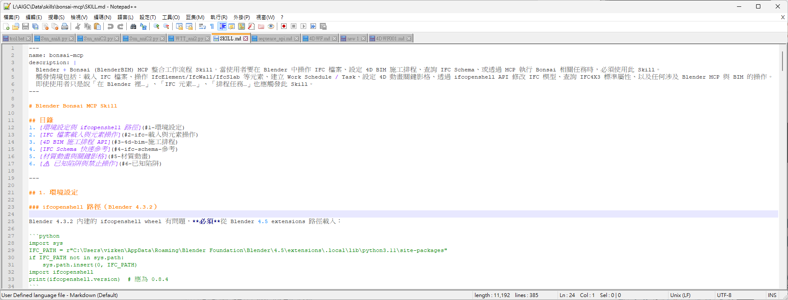
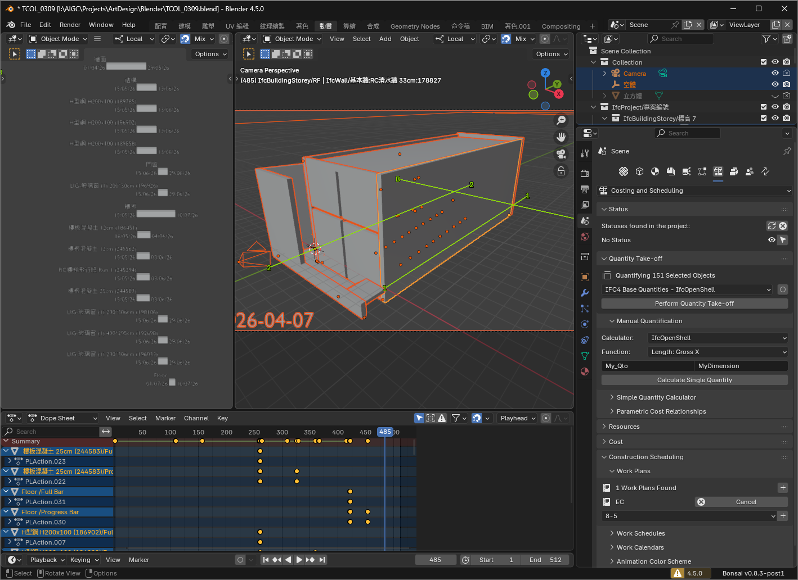
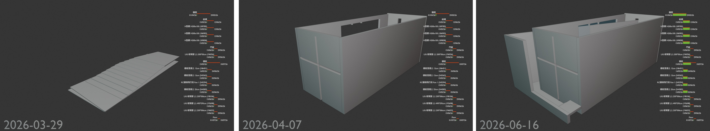
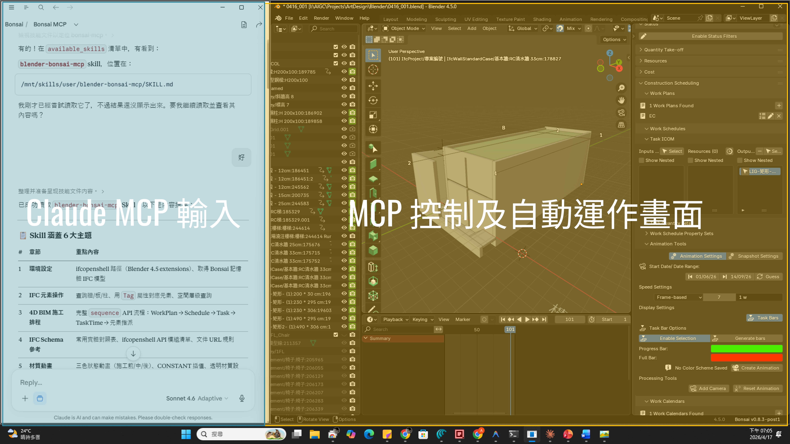

從 Open BIM 4D 排程到 AI Agent 語意驅動工作流
本篇作為 PP02 之後的技術延伸，說明 Blender Bonsai、MCP 與 Skill 如何把 IFC 分析、任務建立、排程與動畫控制封裝成可重複工作流。
核心工具：Blender Bonsai
核心協定：Model Context Protocol
核心目標：降低 BIM 4D 操作門檻並提升流程一致性

主流 BIM 商業環境在建模上成熟，但 4D 排程與施工動畫仍常依賴外部工具，造成資料、流程與展示斷裂。
模型、排程、動畫與展示常分散在不同工具
BIM 與施工排程的整合成本高
Open BIM 需要可實驗、可自動化的替代路徑

問題不只在 Bonsai 能不能做 4D，而是如何用 MCP 與 Skill 把操作封裝成可被 AI Agent 執行的任務。
Bonsai 在 4D 面向的完整性與特有性需要整理
MCP 如何連接 Bonsai 並執行 BIM 4D 操作仍待探索
Skill 可將重複任務轉成穩定模板

PP03 的技術結構可視為四層：資料層、工具層、協定層與任務層。
IFC / buildingSMART：Open BIM 資料基礎
Blender Bonsai：IFC/BIM 操作與 4D 排程環境
MCP 與 Skill：工具連接與流程封裝

工作流的目標是把 4D 建置拆成可描述、可執行、可驗證的任務序列。
建立 Work Schedule、Task 與施工動畫
將模型構件與任務排程關聯
透過 MCP 與 Skill 封裝 4D 控制流程

Bonsai 不只是 IFC 檢視器，也能在同一環境中建立施工任務、任務條、模型關聯與動畫模擬。
建立施工任務與時間資訊
將模型構件與任務關聯
使用 Animation Tools 與 Task Bars 呈現施工順序

實作結果顯示，Bonsai 4D 可作為 Open BIM 研究與展示的可行路徑；MCP/Skill 則讓它具備語意控制與自動化意義。
Bonsai 具備 BIM 4D 應用的基本功能完整性
相較商業 BIM 工作流，Bonsai 在 4D 面向展現開源整合優勢
MCP 與 Skill 讓 Bonsai 4D 具備語意控制與流程封裝潛力

PP02 展示模型如何進入瀏覽器，PP03 則說明模型、任務與動畫資料如何被更穩定地建立與控制。
PP02：Web3D 展示與類 4D 互動敘事
PP03：Bonsai 4D 排程、MCP 指令與 Skill 封裝
未來：Web 視覺化、Digital Twin、5D 成本與 6D 維運延伸
